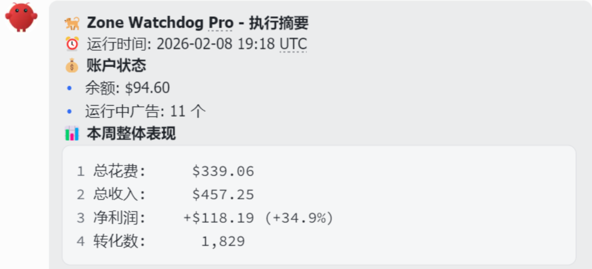

给OpenClaw 100美金跑广告的文章写完之后，出现两种声音。
第一种：期待和思考究竟AI能带来多大的效应。
第二种：不会有人把权限给它去跑广告，纯噱头。
这大半个月有不少朋友私信我，他们也开始了OpenClaw跑广告，而且五花八门。跑FB、Native、确实大开眼界。看来大部分人也入池了，尝试一些新玩意总是有趣的。
今天，交上之前用OpenClaw跑广告的后续，直接上Zone Watchdog Pro 2月8日数据：

最初投进去的100美金，后面追加了预算，整体花了339刀，赚回来457刀。
这次试验总结几点经验：
第一：Offer地区选好了，AI放大了我的判断
这次不是让AI完全自由发挥，而是先用自己的经验框定了优先地区，再让它在范围内做执行优化。方向盘在我手里，油门和刹车交给AI。
很多人上来就问能不能全自动，我的答案是：能，但不建议。先把高价值决策留给人，高频重复动作交给AI，胜率更高。
第二：权限不是给或不给，而是怎么给
不会有人把权限给它跑广告这句话，只说对了一半。真正成熟的做法不是裸奔式放权，而是分层授权：
读权限默认开放——看数据、出报告；
低风险写权限可控开放——调价、暂停；
高风险动作必须二次确认——大额预算变更、批量操作。
这样设计后，AI不是不可控的黑盒，而是一个有边界、有审计轨迹的执行系统。所以问题从来不是敢不敢给权限，而是你有没有把权限设计成可管理的结构。
第三：投放不靠神奇Prompt，靠规则闭环
这轮能跑正ROI，核心不是某一句Prompt，而是三件事形成闭环：
监控——持续盯花费、转化、ROI波动；
止损——达到阈值立即动作，不犹豫；
调优——有潜力的加预算，快速白名单化，拖后腿的快速处理。
这三步听起来普通，但很多新手恰恰知道该做、做不到持续执行。AI最大的价值，就是把偶尔做对变成每天都做对。
第四：从日报升级到决策协同
以前很多自动化只会发一堆数字，看完还是要人自己判断。这次我把输出改成了可行动摘要：当前是否需要人工介入、哪些广告继续跑哪些已自动止损、下一周期建议动作。
它不再只是告诉你发生了什么，而是告诉你现在它做了什么，你该准备什么。从信息推送工具变成决策协同工具，这一步的体验差距非常大。
最后给想实测的朋友一个建议：别一上来就追求替代人，先追求解放双手。用100美金验证流程，用200美金验证稳定性，再考虑放量。
这次实盘之后我更确定一件事：AI在投放里的价值，不是表演智能，而是把你脑子里分散的判断，固化成每天都能跑的执行力。
执行稳定了，盈利就是结果，不再只靠运气。